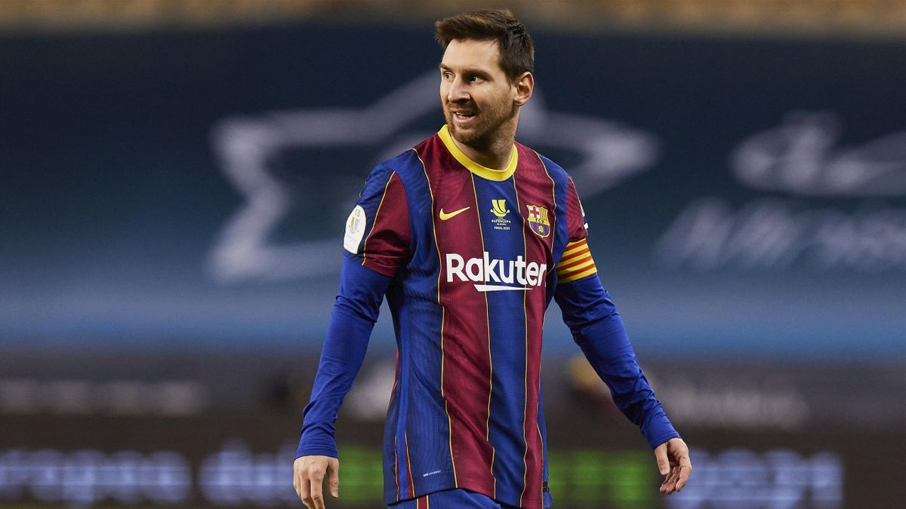
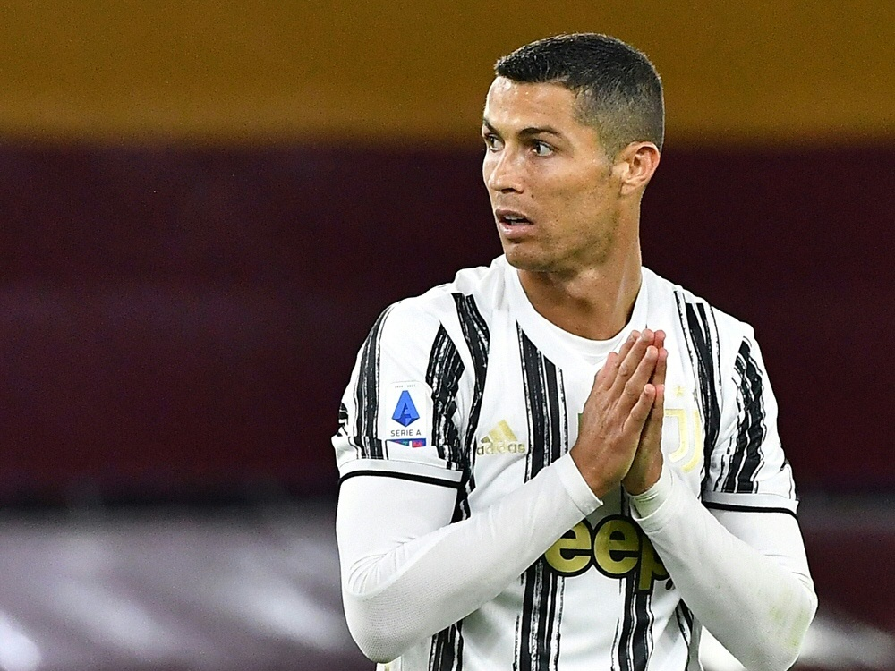
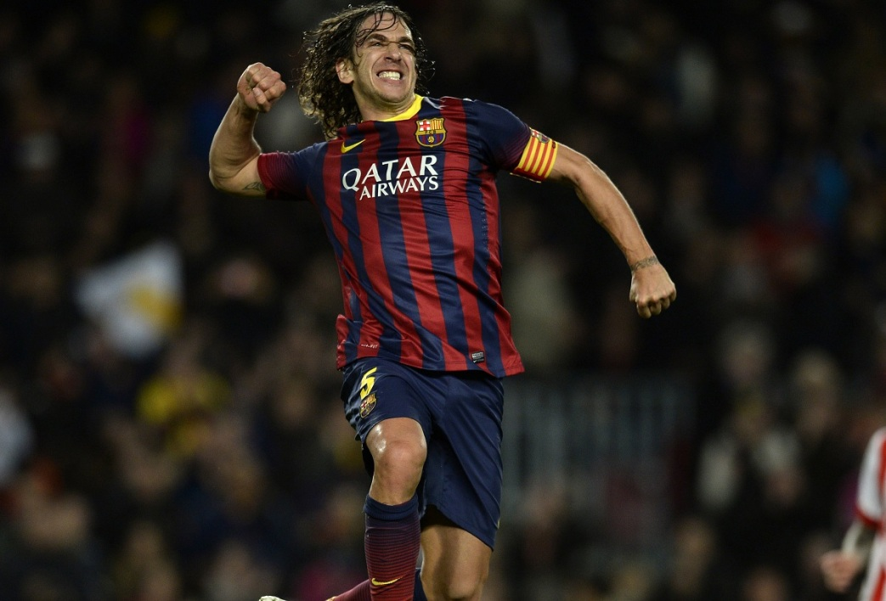

Basketball ist eine Ballsportart bei welcher das Ziel des Spieles ist, den Ball in den Korb zu werfen, der in einer Höhe von 3,05 Meter an den Schmalseiten des Spielfeldes angebracht ist.
Jede Mannschaft versucht so viele Bälle wie möglich in den Spielkorb auf der gegenüberliegenden Seite des Spielfeldes zu werfen.
Jeder Treffer des Balles in den Korb zählt dabei abhängig von der Entfernung aus der der Spieler geworfen hat, zwei oder drei Punkte.
Reiten bezeichnet die Fortbewegung des Menschen auf dem Rücken eines Tieres. Dabei kann es sich um Pferde, aber auch um andere Reittiere wie Esel oder Kamele handeln.
Der Reiter kann auf verschiedene Weisen auf das Reittier einwirken. Die Einwirkungen werden Hilfen genannt. Zu diesen zählen Gewichtsverlagerung, Schenkeldruck, Zügel oder Leinen und die Stimme.
Auch Hilfsmittel wie Gerten und Sporen dienen der Einwirkung.
Reiten bezeichnet die Fortbewegung des Menschen auf dem Rücken eines Tieres. Dabei kann es sich um Pferde, aber auch um andere Reittiere wie Esel oder Kamele handeln.
Der Reiter kann auf verschiedene Weisen auf das Reittier einwirken. Die Einwirkungen werden Hilfen genannt. Zu diesen zählen Gewichtsverlagerung, Schenkeldruck, Zügel oder Leinen und die Stimme.
Auch Hilfsmittel wie Gerten und Sporen dienen der Einwirkung. Dabei ist das Zusammenspiel der Hilfen für die Kommunikation mit dem Tier entscheidend, eine isolierte Hilfe ist wenig wirkungsvoll.
Gut ausgebildete, feinfühlige Tiere reagieren auf minimale, von außen kaum wahrnehmbare Hilfen. So erkannte der „Kluge Hans“, ein „rechnendes“ Pferd, anhand von Spannung und Erleichterung des Fragenstellers,
wie oft er mit dem Huf klopfen sollte.